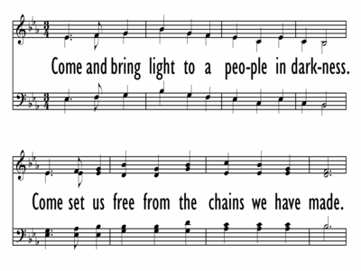

|
|
562求開心竅 |
|
Chorus 1 Come and bring light to a people in darkness Verse 1 To the ones broken hearted Verse 2 To the victims of violence Verse 3 When a color divides us Verse 4 To those full of life's sorrow Verse 5 To those suffering illness
|
|
|
https://digitalsongsandhymns.com/songs/4635
 |
|
|
|
|

新普天頌讚 #562 求開心竅 聖詩分析 https://www.hkchurchmusic.org/index.php/component/allvideoshare/video/hup562 - CCS 287 - Come and Bring Light (short version) The Beyond the
Walls Choir
https://youtu.be/DvLiWbSh990 -
| Text: | Open Our Eyes |
| Author: | Kevin Kell |
| Tune: | [To the ones brokenhearted] |
| Composer: | Kevin Kell |
Author and Composer Information
Tune Information
| Title: | [To the ones brokenhearted] |
| Composer: | Kevin Keil |
| Key: | E♭ Major |
| Copyright: | © 1998, Lorenz Publishing Co. |
Musical Suggestion
Scripture References
Confessions and Statements of Faith References
Further Reflections on Confessions and Statements of Faith References
Any song or testimony about the cries that comes from our nations and cities must be met with confessional statements about the mission of the church as listed here.
Our World Belongs to God, paragraphs 41-43 are explicit and pointed about the mission of the church: “In a world estranged from God, where happiness and peace are offered in many names and millions face confusing choices, we witness—with respect for followers of other ways—to the only one in whose name salvation is found: Jesus Christ.”
Later, Our World Belongs to God, paragraphs 52-54 point to the task of the church in seeking public justice and functioning as a peacemaker: “We call on our governments to work for peace and to restore just relationships. We deplore the spread of weapons in our world and on our streets with the risks they bring and the horrors they threaten…”
The Belhar Confession, section 3 calls the church to be a peacemaker, and section 4 calls the church “to bring about justice and true peace.”
Our Song of Hope, stanza 10 calls the church to seek “the welfare of the people” and to work “against inhuman oppression of humanity.”
Kevin Keil brings more than 40 years of experience to his sacred music ministry. A talented organist, pianist, guitarist, cantor and music director, he is also a prolific composer of instrumental and vocal pieces.
Bio
Kevin Keil brings more than 40 years of experience to his sacred music ministry. A talented organist, pianist, guitarist, cantor and music director, he is also a prolific composer of instrumental and vocal pieces. After serving Catholic parishes in the Cleveland, Ohio, area for three decades, he took his ministry to The Colony, Texas, for a time. He has a bachelor’s in music from Cleveland State University and a master’s in church music and liturgy from St. Joseph’s College in Rensselaer, Indiana.
Kevin has composed many beloved songs for worship, including “One Spirit, One Church,” “One Love Released,” “See Amid the Winter’s Snow,” “All Good Gifts” and “Signed by Ashes.” After several early solo albums—The Vineyard of the Lord, Chosen by God and See Amid the Winter’s Snow—he produced two collaborative collections with Gael Berberick and Barney Walker: Through the Eyes of Faith and For Your Glory Reigns. Shine in Me is a collection of hymns and songs for the church year, with texts by Kate Bluett and musical settings by Kevin. His most recent collection is The King Of Love, a captivating collection offering 10 instrumental arrangements of beloved hymns and songs.
Kevin is an excellent choice for workshops on composing and arranging liturgical music and teaching repertoire to the choir and assembly.
After many years in Ohio and Texas, Kevin now lives in Tampa, Florida. He is music director at Christ the King Catholic Church in that beautiful Gulf Coast city.
https://www.ocp.org/en-us/artists/365/kevin-keil